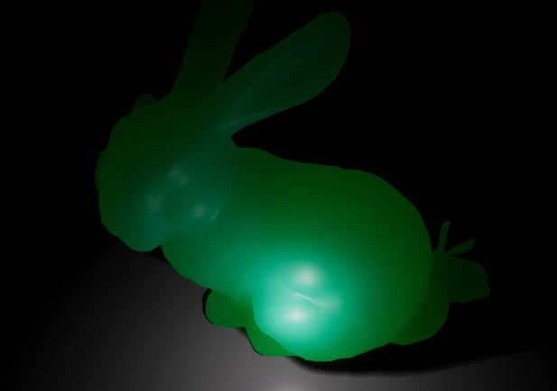

HDRP中的次表面散射
前言
今天来研读一下HDRP的屏幕空间次表面散射的实现。
次表面散射
不多介绍了，就是模拟光线在介质中传播，常用于皮肤、植被、蜡烛等半透明的材质。
双向次表面散射反射率分部函数
bidirectional subsurface scattering reflectance distribution functio简称BSSRDF
从名字大致能看出来是和BSDF类似的，但是考虑了次表面散射的因素。
R 是扩散分布，F_t 是菲涅耳，C 是归一化常数
实时实现
上述只是理论，第一个实时的实现由Eugene d’Eon提出。
使用高斯分布混合来拟合扩散剖面。
选择高斯有几个原因：
- 足够简单方便
- 高斯卷积可分解，因此有线性而不是二次的复杂性。
- 使用“较小”高斯的重复卷积等同于使用“较大”高斯的单次卷积。
可分离的次表面散射的问题
- 高斯卷积是可分离的，因此速度很快
- 只有在平面上过滤时才可分离
- 双边滤波让卷积“伪可分离”
- 结果在视觉上是合理的
- 高斯混合公式显然是不可分离的，除非你对每个高斯执行 2 次卷积传递
- 可能导致 Somewhat Separable Screen Space SSS(SSSSSSS)，这可能会导致必须在内容端修复的伪像
- 为 2 个高斯执行 4 次传递在实践中成本太高
- 对艺术家不友好
- 这只是个数学概念
- 自由度太高
- 非直觉
虽然效果很好，但还是过于昂贵。所以需要一种屏幕空间的实现方式。
而且参数太多，不直观
Burley的归一化扩散模型
又名Disney SSS。
它为使用蒙特卡洛暴力模拟获得的参考数据（无偏解）提供了准确的拟合。(说人话就是和现实情况很匹配)
自然地，这意味着要同时考虑单次和多次散射。
它只有两个参数：体积反照率 A 和形状参数
s。它们都可以解释为颜色。

形状参数与散射距离成反比。
这里有两个特点：
- 形状尖峰和长尾都是高斯分布做不到的
- 显然是不可分离的
扩散分布被归一化，以用作概率密度函数。
散射距离在像素的尺寸上时，漫反射BRDF近似于SSS。
这意味这这两个着色模型在一定距离后应该有相同的视觉效果。
提供了两种反照率选项
- 散射后贴图，包含了SSS引起的渗色，如照片等，这样就只在出口出应用反照率。
- 散射前和散射后贴图
实现
在屏幕空间执行卷积，并使用深度缓冲来考虑表面几何形状。
精确的执行全部卷积显然是不可能的，这就应用到了之前的概率密度函数，采样像素的周围一定半径的圆盘，然后乘以权重并累计。最后得到次表面散射结果。
具体的如何依据重要度采样，采样圆盘如何投影到物体表面，就无力再细究了。有兴趣的去啃原文吧。
透射
出于性能的考虑，给出了两种方式来实现，一种只适用于薄物体，第二种处理更一般的半透明情况。
前者unity采用了一个简化的模型：
- 几何形状是厚度恒定的平面版
- 背面法线是反转的正面法线
- 厚度在纹理中提供
- 整个背面都接收恒定的光照
厚度图
基于上面的简化模型，我们需要手动制作一张厚度图。
以斯坦福兔子为例，找个分好UV的，丢到SubstancePainter中，烘培一下就好。
Unity中参数的影响
有上面的基础，就大概能理解Unity中的各项参数对效果和性能的影响了。
配置
HDRP配置中的Subsurface Scattering，开启关闭次表面效果
Smaple Budget对应不同挡位的采样次数。
在HDRP全局设置中，FrameSettings中可以具体设置采样次数是按预设还是自定义。
扩散剖面
支持最多15个扩散剖面，要预先添加到HDRP设置中
最后来看看这里的参数
scatering distance:散射距离，三个通道分别定义了RGB的散射距离，单位mm。距离越大，光线可以散射的距离越大，看起来就越通透。

Max Radius:最大半径，用于显示在散射距离中定义的效果的有效最大半径（以毫米为单位）。不能直接更改此值。
Index of refraction：折射率，值越大，镜面反射的强度就越大。例如，皮肤的折射率约为1.4。有关不同材料的折射率的更多示例值，请参阅像素和多边形折射值指标列表
world scale：世界缩放比例。
textureing mode：贴图模式，对应了上面的两种模式。
Transmission Mode：透光模式：两种模式
- Thin Object
- Thick Object
Transmission tint：透射色调，最终的颜色与散射距离也有关系。
Thickness Remap：厚度重映射，对应厚度图的[0,1]，到实际厚度的重映射。单位mm。


所以最终的效果还是要看贴图质量，简单的玉石、蜡烛、树叶之类的还能简单的调一调，人物要想手动调整可太难了。所以还是寄希望于CC3，Daz之类吧。